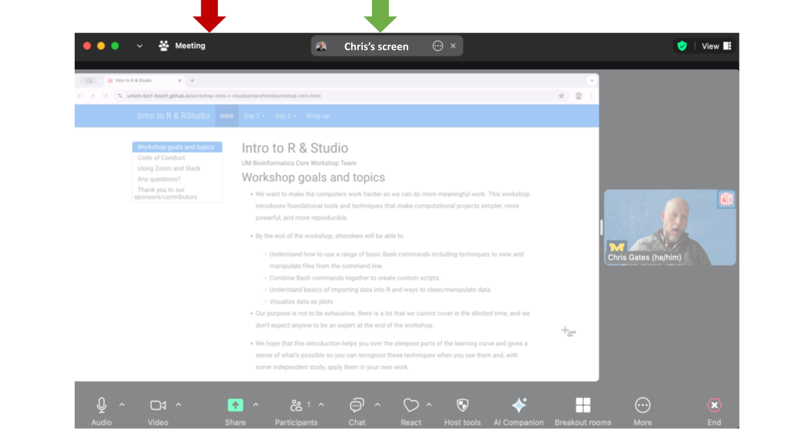
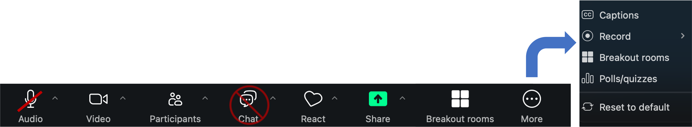
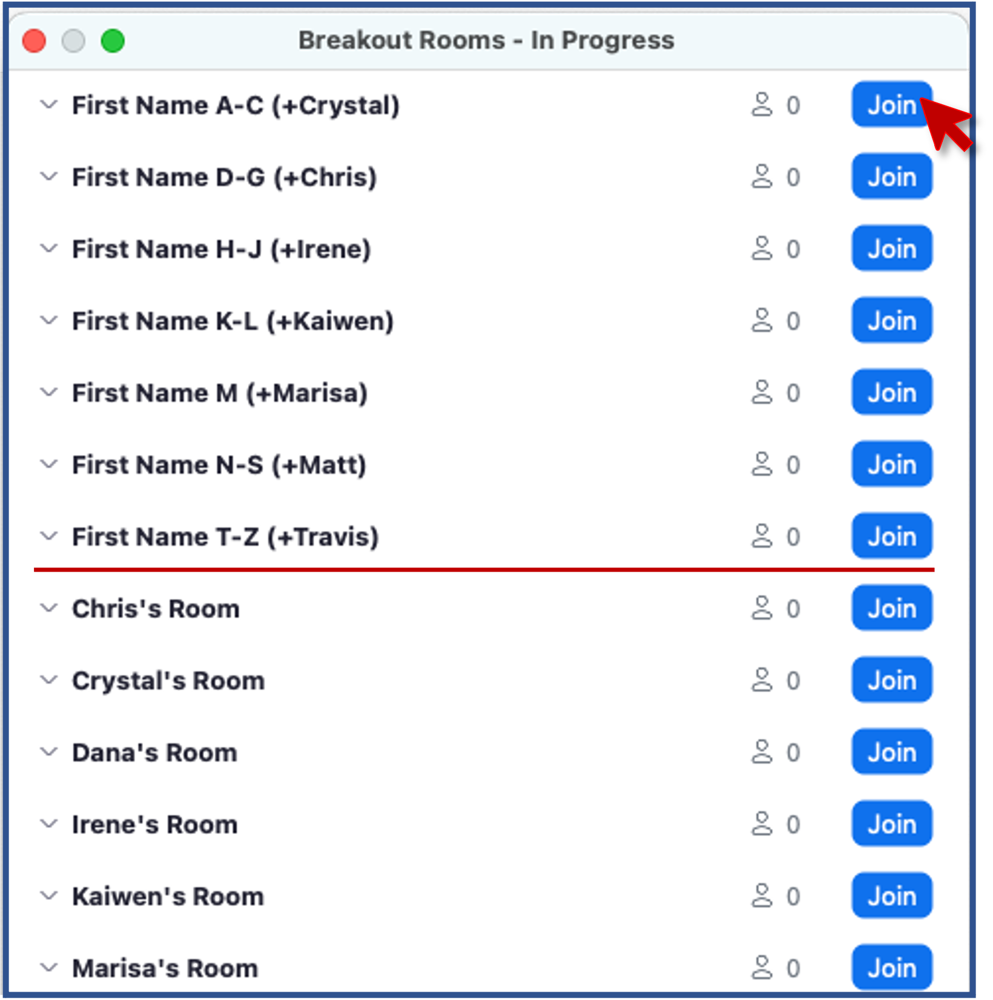
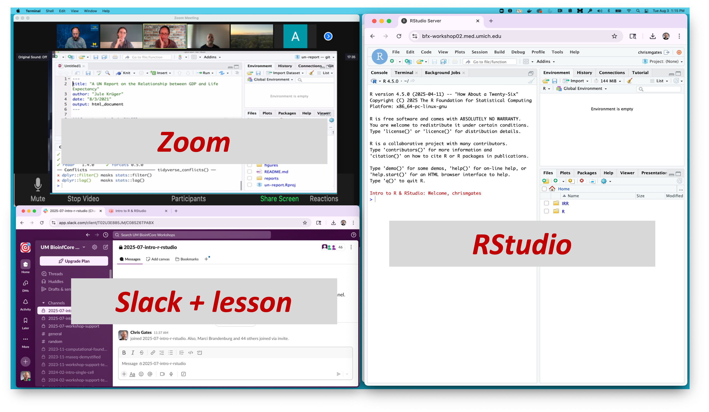

Intro
UM Bioinformatics Core Workshop Team
Workshop goals and topics
Functional Enrichment Analysis places a list of differentially expressed genes into a biological context. It presents a systems-level perspective that can reveal expression patterns, elucidate molecular mechanisms, and guide follow-up experiments.
This workshop is targeted toward researchers comfortable with R/RStudio who would like to better understand and apply functional enrichment approaches for bulk and/or single-cell RNA-seq datasets.
By the end of this workshop, participants will be able to:
Describe common approaches, tools, and reference databases.
Run analyses on single-cell and bulk RNA-Seq inputs using web tools and R.
Understand and use different functional analysis approaches, including over-representation analysis and GSEA analysis.
Build meta-analyses across multiple comparisons.
Visualize gene-level activity within gene sets and create publication-ready figures.
We hope that this introduction provides a foundation to help interpret and run functional analyses on your own.
Our purpose is not to be exhaustive, there is a lot that we cannot cover in the allotted time, and we don’t expect anyone to be an expert at the end of the workshop.
Please let us know if there is anything we can do to improve the workshop experience.
About the workshop team
 |
 |
||
|---|---|---|---|
| Chris | Marci | Dana | Raymond |
 |
 |
 |
|
| Travis | Rebecca | Nick |
Code of Conduct
Be kind to others. Do not insult or put down others. Behave professionally. Remember that harassment and sexist, racist, or exclusionary jokes are not appropriate for the workshop.
All communication should be appropriate for a professional audience including people of many different backgrounds. Sexual language and imagery is not appropriate.
The Bioinformatics Core is dedicated to providing a harassment-free community for everyone, regardless of gender, sexual orientation, gender identity and expression, disability, physical appearance, body size, race, or religion. We do not tolerate harassment of participants in any form.
Thank you for helping make this a welcoming, friendly community for all.
If you have questions about the CoC please reach out to the hosts during the workshop, or email us at bioinformatics-workshops@umich.edu.
To report a CoC incident/concern, please email Chris Gates (Bioinformatics Core, Managing Director) at cgates@umich.edu or contact the University of Michigan Equity, Civil Rights, and Title IX Office at University of Michigan Equity, Civil Rights, and Title IX Office.
Using Zoom and Slack
We will be recording this session. Recordings will be available to participants following the workshop.
To see what the instructor is sharing, click the “Chris’s Screen” button in the top of the Zoom window. 
Zoom controls are at the bottom of the Zoom window: 
To minimize distractions, we encourage participants to keep their audio muted (unless actively asking a question).
To maximize engagement, we encourage participants to keep their video on.
Slack works better than Zoom’s Chat function so avoid Zoom Chat for now.
You can enable transcription subtitles for your view.
We will be using Breakout Rooms occasionally for ad-hoc 1-1 helper support. We will review this in detail together in a few minutes.
Zoom’s “Reactions” are a useful way to interact. You can access these from the React button.

- Raise Hand to request clarification or ask a question. (Same as an in-person workshop.)
- Instructors will use Green check and Red
X to poll the group at checkpoints along the way.
Exercise: Use Zoom non-verbals
- Everyone use Zoom to raise your hand.

Exercise: Using Zoom Breakout Rooms
An optional exercise
Take a moment to briefly introduce yourself (name, dept/lab, area of study) in a breakout room.
- Zoom: Click Breakout Rooms
- Find the room corresponding to the first letter of your first name
- Click Join (to the right of the room name).
- When you have completed introductions, you can leave the breakout room to rejoin the main room.

- Slack can be used to communicate to the group or to individuals and has a few features/behaviors that we prefer over Zoom’s Chat functionality.

- Slack messages will be posted to the 2025-09-functional-analysis channel. Click on the channel in the left pane (1) to select this channel.
- You can type in the message field (2); click send (3) to post your message to everyone.
- Helpers will respond in a Slack thread (or pose the question to the instructor)
- You can respond in a message thread by hovering over a message to trigger the message menu and clicking the speech bubble (4).
Exercise: Responding in Slack thread
What is one thing you hope to learn in this workshop?
Review of Key communication patterns
| “I have an urgent question” | |
Post a question |
| “I have a general question” | Post a question | |
| “I’m stuck / I need a hand” | Post a note | |
| Instructor check-in |  -or-
-or- |
|
| Instructor Slack question | Respond in Slack thread |
Exercise: Group checkpoint
- Using Zoom, give me a green-check if you feel like
you understand communication patterns or red-X if you
need clarification.
Arranging your screens
It is important that you can see:
- Zoom (instructor’s shared screen + reactions)
- A web browser page (will be used for WebGestalt and R/Studio)
- Slack
- Lesson plan web page

Any questions?
Thank you to our sponsors/contributors

University of Michigan Library
Our mission is to support, enhance, and collaborate in the instructional, research, and service activities of faculty, students, and staff, and contribute to the common good by collecting, organizing, preserving, communicating, sharing, and creating the record of human knowledge.
UM BRCF Bioinformatics Core
- The University of Michigan BRCF Bioinformatics Core is a team of analysts that help researchers design, analyze, and interpret high-throughput genomics experiments.
- Last year we helped about 60 researchers design and execute about 100 projects including gene expression, epigenetic, variant identification, functional enrichment and many other kinds of analyses.
- We provide letters of support for grant proposals.
- We offer a series of bioinformatics-focused workshops.
Biomedical Research Core Facilities
Biomedical Research Core Facilities (BRCF) helps researchers
economically take advantage of the latest technology and collaborate
with top experts in the field. Established in 1986, the BRCF was formed
to offer centralized access to research services and equipment.
Acknowledgements
This workshop content is licensed under a Creative Commons Attribution 4 License.
The workshop Code of Conduct has been adapted from the NumFocus Code of Conduct which itself draws from numerous sources, including the Geek Feminism wiki, created by the Ada Initiative and other volunteers, which is under a Creative Commons Zero license, the Contributor Covenant version 1.2.0, the Bokeh Code of Conduct, the SciPy Code of Conduct, the Carpentries Code of Conduct, and the NeurIPS Code of Conduct.
This workshop relies heavily on these tools / approaches/ datasets:
- WebGestalt
- John M Elizarraras, Yuxing Liao, Zhiao Shi, Qian Zhu, Alexander R
Pico, Bing Zhang, WebGestalt 2024: faster gene set analysis and new
support for metabolomics and multi-omics,
Nucleic Acids Research, 2024, gkae456. - Liao, Y., Wang, J., Jaehnig, E., Shi, Z., Zhang, B. WebGestalt 2019: gene set analysis toolkit with revamped UIs and APIs, Nucleic Acids Research, gkz401.
- Wang, J., Vasaikar, S., Shi, Z., Greer, M., & Zhang, B. WebGestalt 2017: a more comprehensive, powerful, flexible and interactive gene set enrichment analysis toolkit. Nucleic Acids Research.
- Wang, J., Duncan, D., Shi, Z., Zhang, B. (2013). WEB-based GEne SeT AnaLysis Toolkit (WebGestalt): update 2013. Nucleic Acids Res, 41 (Web Server issue), W77-83.
- Zhang, B., Kirov, S.A., Snoddy, J.R. (2005). WebGestalt: an integrated system for exploring gene sets in various biological contexts. Nucleic Acids Res, 33(Web Server issue), W741-748.
- John M Elizarraras, Yuxing Liao, Zhiao Shi, Qian Zhu, Alexander R
Pico, Bing Zhang, WebGestalt 2024: faster gene set analysis and new
support for metabolomics and multi-omics,
- Broad GSEA
- Subramanian A, Tamayo P, Mootha VK, et al. Gene set enrichment analysis: a knowledge-based approach for interpreting genome-wide expression profiles. Proc Natl Acad Sci U S A. 2005;102(43):15545-15550. doi:10.1073/pnas.0506580102. https://doi.org/10.1073/pnas.0506580102
- Mootha VK, Lindgren CM, Eriksson KF, et al. PGC-1alpha-responsive genes involved in oxidative phosphorylation are coordinately downregulated in human diabetes. Nat Genet. 2003;34(3):267-273. doi:10.1038/ng1180. https://doi.org/10.1038/ng1180
- Bulk diffex data were derived from:
- Zhang S, Macias-Garcia A, Ulirsch JC, et al. HRI coordinates
translation necessary for protein homeostasis and mitochondrial function
in erythropoiesis. Elife. 2019;8:e46976. Published 2019 Apr 29. doi:10.7554/eLife.46976.
https://doi.org/10.7554/elife.46976
GEO accession GSE119365
- Zhang S, Macias-Garcia A, Ulirsch JC, et al. HRI coordinates
translation necessary for protein homeostasis and mitochondrial function
in erythropoiesis. Elife. 2019;8:e46976. Published 2019 Apr 29. doi:10.7554/eLife.46976.
https://doi.org/10.7554/elife.46976
- Single-cell diffex data were derived from:
- Sorkin M, Huber AK, Hwang C, et al. Regulation of heterotopic
ossification by monocytes in a mouse model of aberrant wound healing.
Nat Commun. 2020;11(1):722. Published 2020 Feb 5. doi:10.1038/s41467-019-14172-4.
https://doi.org/10.1038/s41467-019-14172-4
GEO accession GSE126060
- Sorkin M, Huber AK, Hwang C, et al. Regulation of heterotopic
ossification by monocytes in a mouse model of aberrant wound healing.
Nat Commun. 2020;11(1):722. Published 2020 Feb 5. doi:10.1038/s41467-019-14172-4.
- WebGestalt